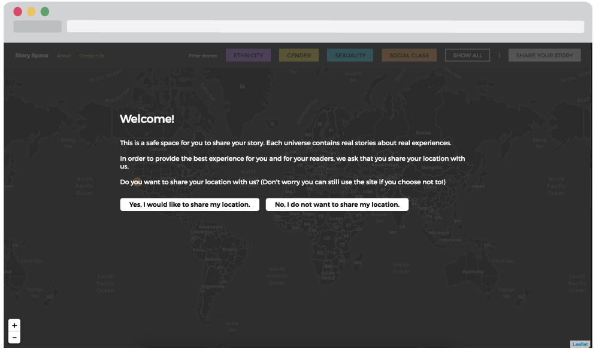
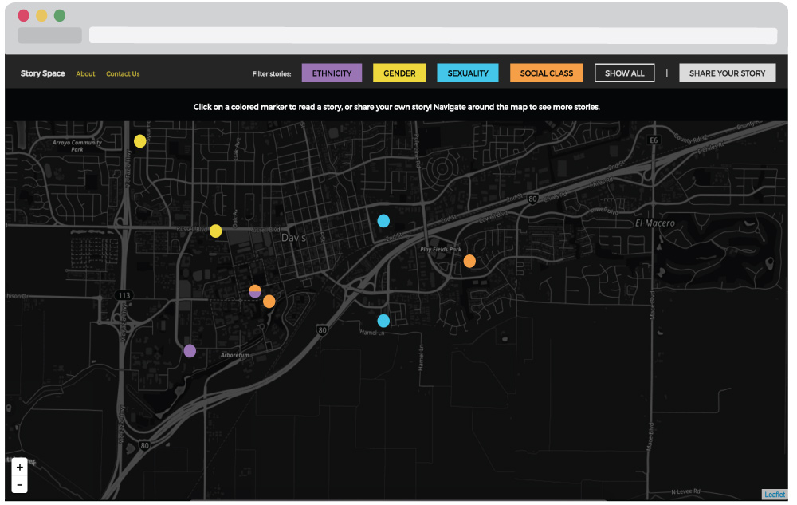
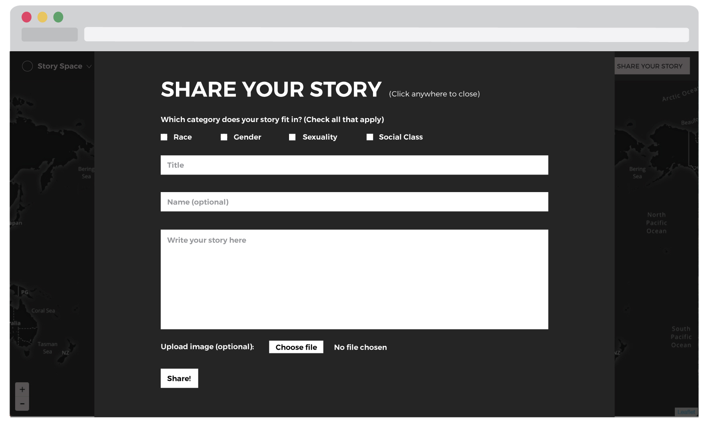

This is currently a work in progress
Story Space is an interactive and location-based story sharing website for people to share their stories and experiences and a place for people to discover stories made in collaboration with Alicia Tang.

The primary goal is to educate and empower individuals through personal narratives to not only raise awareness of issues, but also generate compassion for one another, because if these stories can change the minds of just a few people, then this can help become a small step that pushes us towards social change.
Personal narratives have the power to influence, spread ideas, and create empathy for one another. Everyone has a story to share and you never know what issues or struggles a person may be going through. We hope to inspire and encourage people to open their minds through these stories and also feel safe enough to share about their own personal experiences.
Alicia and I both knew we wanted to create some type of platform for people to share stories. She was concerned about issues with race and racial inequality and I was concerned with issues about feminism and gender inequality. We decided to combine our ideas together to create a platform for people to share their stories and experiences regarding race, gender, sexual identity, and social class.
When the user first goes onto the site, they are asked to share their location.
If the user shares their location then the map is navigated to their actual location to reveal nearby stories.
Users can navigate around the map to read stories or filter the type of stories they want to see by category.
Users can also submit their own story and once a story has been submitted it immediately gets posted onto the map. 